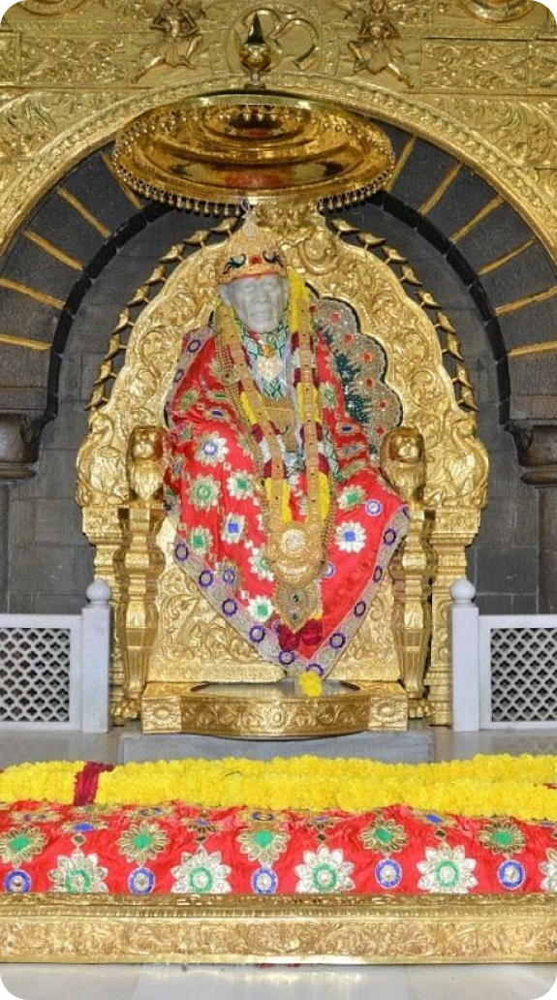
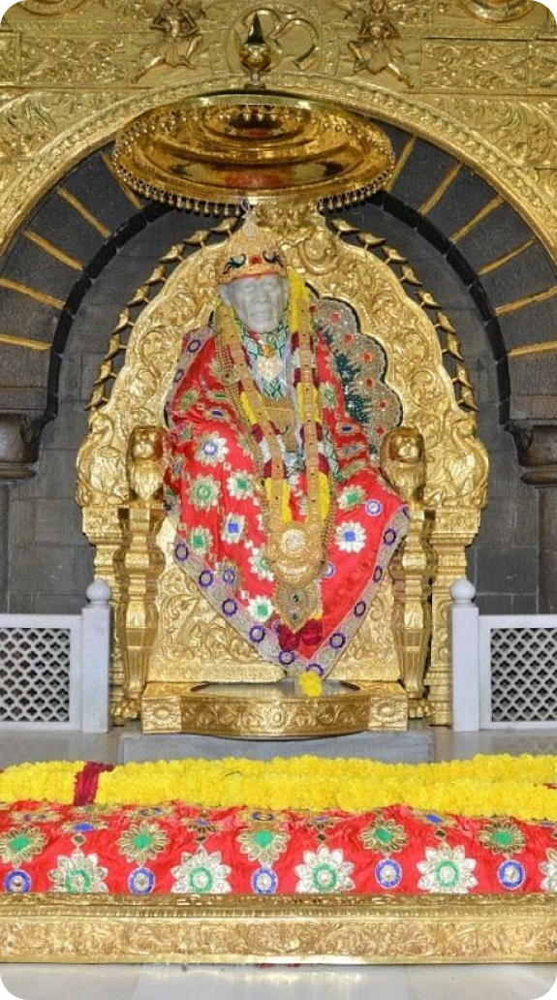

Religious & Spiritual
HOME
ABOUT
MAP
CONTACT
PRIVACY POLICY
PLACES TO VISIT
Historical
Religious & Spiritual
Parks & Recreation
Educational
Tours & Package
Copyright 2023 MH City
 

Timings :-
About :-
Shirdi is a town in the state of Maharashtra, in western India. It's known as the former home of revered spiritual leader Sai Baba, and as a major pilgrimage site.
Brief History: -
In August 1918, Shirdi Sai Baba told some of his devotees that he would soon be "leaving his mortal body".Towards the end of September, he had high fever and stopped eating.As his condition deteriorated, he asked his disciples to recite holy texts to him, although he also continued to meet visitors. He died on 15 October 1918, the same day as that year's Vijayadashami festival. His remains were interred at Buti Wada in Shirdi, which later became a place of worship that is known today as Shree Samadhi Mandir or Shirdi Sai Baba Temple.
Entry Fee :-
5AM - 11PM (Daily)
Rs 200 (For VIP’s)
Shirdi
About
Places To Visit
Map
XPLOREMH